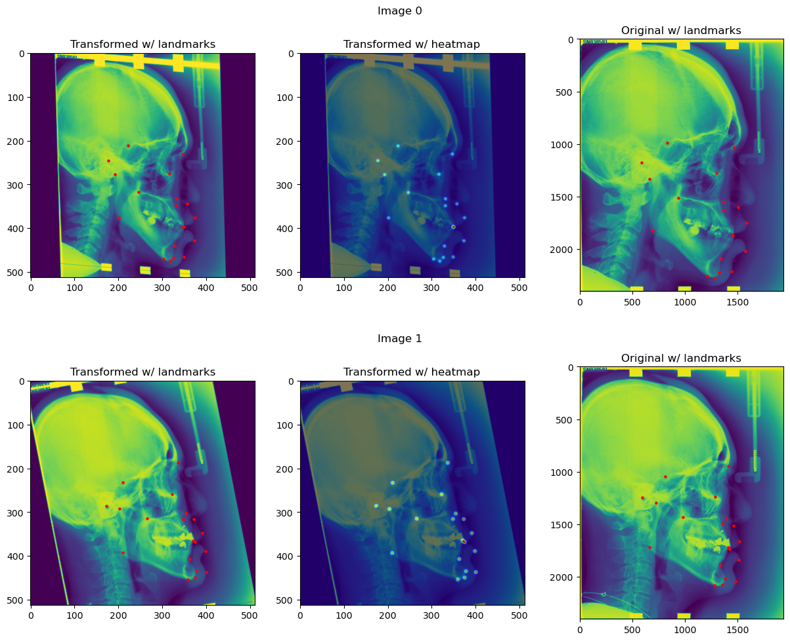
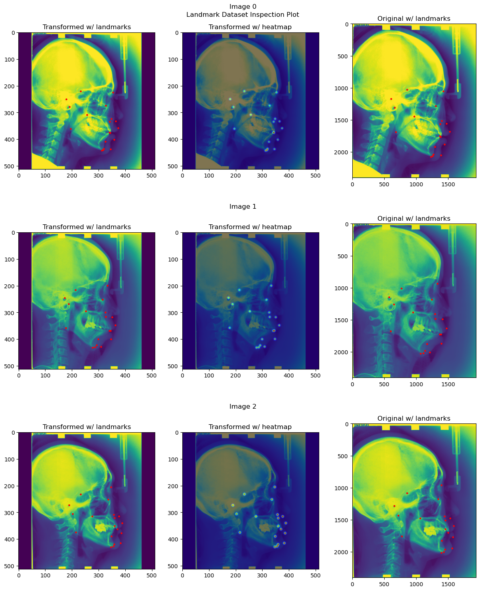
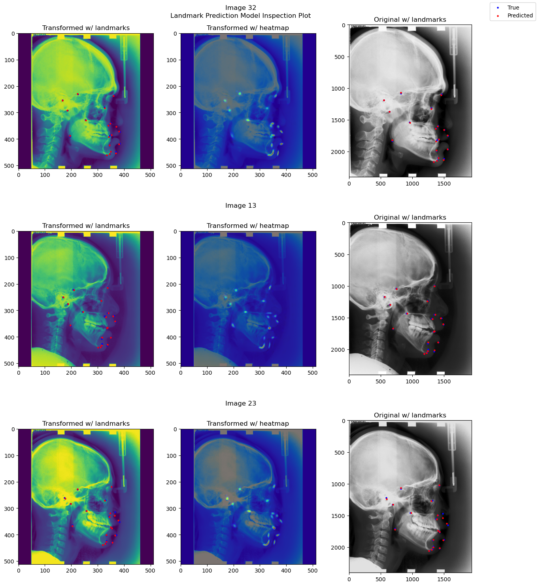
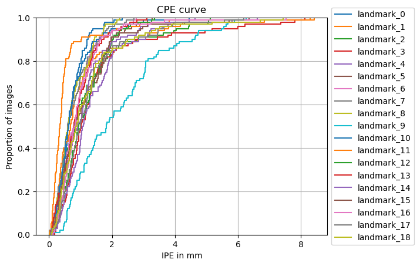

Training and Evaluating Adaptive Heatmap Regression Model for Landmark Detection with ISBI 2015 Cephalometric X-ray Dataset#
In this tutorial, we will train and evaluate an adaptive heatmap regression model for landmark detection with the ISBI 2015 Cephalometric X-ray dataset. The ISBI 2015 Cephalometric X-ray dataset is a dataset of 2D cephalometric X-rays. The dataset contains 400 images, each with 19 landmarks annotated. The dataset is split into a training set of 150 images and two test sets of 150 and 100 images respectively.
We will go through the following steps:
Setup environment#
# !python -c "import landmarker" || pip install landmarker
import sys
import os
sys.path.append("../src/")
import landmarker
Setup imports and variables#
import numpy as np
import torch
from torch.utils.data import DataLoader
from monai.transforms import (Compose, RandAffined, RandGaussianNoised, RandStdShiftIntensityd,
RandScaleIntensityd, RandAdjustContrastd, RandHistogramShiftd,
ScaleIntensityd, Lambdad)
from tqdm.notebook import tqdm
device = 'cuda' if torch.cuda.is_available() else 'cpu'
Loading the dataset#
Short description of the data and dataset module#
The landmarker package has several built-in
datasets in the landmarker.datasets module, as well as utility classes for building your own
datasets in the landmarker.data module. There are three types of datasets: ‘LandmarkDataset’,
‘HeatmapDataset’, and ‘MaskDataset’. The ‘LandmarkDataset’ is a dataset of images with landmarks,
the ‘HeatmapDataset’ is a dataset of images with heatmaps, and the ‘MaskDataset’ is a dataset of
images with masks (i.e., binary segmentation masks indiciating the location of the landmarks). The
‘HeatmapDataset’ and ‘MaskDataset’ both inherit from the ‘LandmarkDataset’ class, and thus also
contain information about the landmarks. The ‘MaskDataset’ can be constructed from specified image
and landmarks pairs, or from images and masks pairs, because often that is how the data is
distributed. The ‘HeatmapDataset’ can be constructed from images and landmarks pairs.
Images can be provided as a list of paths to stored images, or as a a numpy arary, torch tensor, list of numpy arrays or list of torch tensors. Landmarks can be as numpy arrays or torch tensors. These landmarks can be provided in three different shapes: (1) (N, D) where N is the number of samples and D is the number of dimensions, (2) (N, C, D) where C is the number of landmark classes, (3) (N, C, I, D) where I is the number of instances per landmark class, if less than I instances are provided, the remaining instances are filled with NaNs.
For built-in datasets, the landmarker.datasets module provides a function for
downloading and loading the dataset, e.g. get_cepha_landmark_datasets for the ISBI 2015
Cephalometric X-ray dataset. Most of these functions take the same arguments, namely path_dir,
some are dataset specific. The path_dir argument specifies the directory where the dataset is
downloaded to, or loaded from if it is already downloaded. For most datasets multiple functions
are provided for getting different types of datasets. For example, the ISBI 2015 Cephalometric
X-ray dataset has the following functions: get_cepha_landmark_datasets and
get_cepha_heatmap_datasets.
Download and load ISBI 2015 landmark dataset#
The ISBI 2015 Cephalometric X-ray dataset is a dataset of 2D cephalometric X-ray images with 19
landmarks. The dataset is split into a training set of 150 images and two test sets, where test
set 1 contains 150 images and test set 2 contains 100 images. When loading the dataset, you can
also specify a transform function, which is applied to the images and landmarks of the training
set. Currently, we only support the monai.transforms.ComposeD transform, which allows you to compose multiple transforms. The monai.transformsmodule contains many useful transforms, such asRandomAffineandNormalizeIntensity`. The transforms must be dictionary transforms, i.e.,
they must return a dictionary with the keys ‘image’ and (‘seg’), in the case of heatmap and mask
regression.
from landmarker.transforms.images import UseOnlyFirstChannel
fn_keys = ('image',)
spatial_transformd = [RandAffined(fn_keys, prob=1,
rotate_range=(-np.pi/12, np.pi/12),
translate_range=(-10, 10),
scale_range=(-0.1, 0.1),
shear_range=(-0.1, 0.1)
)]
train_transformd = Compose([
UseOnlyFirstChannel(('image', )),
RandGaussianNoised(('image', ), prob=0.2, mean=0, std=0.1), # Add gaussian noise
RandScaleIntensityd(('image', ), factors=0.25, prob=0.2), # Add random intensity scaling
RandAdjustContrastd(('image', ), prob=0.2, gamma=(0.5,4.5)), # Randomly adjust contrast
RandHistogramShiftd(('image', ), prob=0.2), # Randomly shift histogram
ScaleIntensityd(('image', )), # Scale intensity
] + spatial_transformd)
inference_transformd = Compose([
UseOnlyFirstChannel(('image', )),
ScaleIntensityd(('image', )),
])
from landmarker.datasets import get_cepha_landmark_datasets
data_dir = "/Users/jefjonkers/Data/landmark-datasets"
ds_train, ds_test1, ds_test2 = get_cepha_landmark_datasets(data_dir, train_transform=train_transformd,
inference_transform=inference_transformd,
store_imgs = True, dim_img=(512, 512),
junior = True, single_dataset = False)
Reading 150 images...
100%|██████████| 150/150 [00:06<00:00, 23.63it/s]
Resizing 150 images and landmarks...
100%|██████████| 150/150 [00:03<00:00, 42.01it/s]
Reading 150 images...
100%|██████████| 150/150 [00:06<00:00, 22.50it/s]
Resizing 150 images and landmarks...
100%|██████████| 150/150 [00:03<00:00, 38.48it/s]
Reading 100 images...
100%|██████████| 100/100 [00:04<00:00, 24.65it/s]
Resizing 100 images and landmarks...
100%|██████████| 100/100 [00:01<00:00, 61.08it/s]
Constructing a heatmap generator#
The heatmap generator is a class that generates heatmaps from landmarks. It is used to generate
heatmaps from the landmarks of the training set, which are then used to train the model. The
landmarker.heatmap_generator module contains several heatmap generators, such as the
GaussianHeatmapGenerator and LaplaceHeatmapGenerator which generate a multivariate
Gaussian and Laplace distribution respectively. The HeatmapGenerator subclasses take the following
arguments:
sigmas: the standard deviation of the Gaussian distribution, or the scale of the Laplace. This could be a scalar, or a list of scalars, one for each landmark class. Additionally, it could be a covariance matrix, or a list of covariance matrices, one for each landmark class.gamma: If provided, the heatmaps are scaled bygammabefore being returned.rotation: If provided, the heatmaps are rotated byrotationbefore being returned.heatmap_size: The size of the returned heatmaps.learnable: If True, the
sigmaandrotationparameters are learnable parameters, and thus will be optimized during training.background: A boolean indicating whether to add a background class to the heatmaps. If True, the heatmaps will have an additional channel, which is 1 everywhere except at the location of the landmarks, where it is 0. The background class is the first class, i.e., the first channel.all_points: A boolean indicating whether to add a channel with all the landmarks. If True, the heatmaps will have an additional channel, which is 1 at the location of the landmarks, and 0. everywhere else.continuous: A boolean indicating whether to use continuous or discrete landmarks.device: The device on which the heatmaps are generated.
The landmarks provide to the heatmap generator must be a torch.Tensor and can be in three different shapes: (1) (N, D) where N is the number of samples and D is the number of dimensions, (2) (N, C, D) where C is the number of landmark classes, (3) (N, C, I, D) where I is the number of instances per landmark class, if less than I instances are provided, the remaining instances are filled with NaNs. The heatmap generator will return a torch.Tensor of shape (N, C, H, W), where H and W are the height and width of the heatmaps respectively.
Note that with 2D landmarks the y coordinates are the first dimension, and the x coordinates are the second dimension.
from landmarker.heatmap.generator import GaussianHeatmapGenerator
heatmap_generator = GaussianHeatmapGenerator(
nb_landmarks=19,
sigmas=3,
gamma=100,
heatmap_size=(512, 512),
learnable=True, # If True, the heatmap generator will be trainable
)
Inspecting the dataset#
from landmarker.visualize import inspection_plot
# Plot the first 3 images from the training set
inspection_plot(ds_train, range(2), heatmap_generator=heatmap_generator)

# Plot the first 3 images from dataset without transforms
heatmap_generator.device = "cpu" # because dataset tensors are still on cpu
inspection_plot(ds_test1, range(3), heatmap_generator=heatmap_generator)
heatmap_generator.device = device # set the desired device back

Training and initializing the SpatialConfiguration model#
Initializing the model, optimizer and loss function#
from landmarker.models.spatial_configuration_net import OriginalSpatialConfigurationNet
from landmarker.losses import GaussianHeatmapL2Loss
model = OriginalSpatialConfigurationNet(in_channels=1, out_channels=19).to(device)
print("Number of learnable parameters: {}".format(
sum(p.numel() for p in model.parameters() if p.requires_grad)))
lr = 1e-6
batch_size = 1
epochs = 200
optimizer = torch.optim.SGD([
{'params': model.parameters(), "weight_decay":1e-3},
{'params': heatmap_generator.sigmas},
{'params': heatmap_generator.rotation}]
, lr=lr, momentum=0.99, nesterov=True)
criterion = GaussianHeatmapL2Loss(
alpha=5
)
lr_scheduler = torch.optim.lr_scheduler.ReduceLROnPlateau(optimizer, mode='min', factor=0.5,
patience=10, verbose=True, cooldown=10)
Number of learnable parameters: 6181030
/opt/anaconda3/envs/vision/lib/python3.11/site-packages/torch/optim/lr_scheduler.py:28: UserWarning: The verbose parameter is deprecated. Please use get_last_lr() to access the learning rate.
warnings.warn("The verbose parameter is deprecated. Please use get_last_lr() "
Setting the data loaders#
train_loader = DataLoader(ds_train, batch_size=batch_size, shuffle=True, num_workers=0)
val_loader = DataLoader(ds_test1, batch_size=batch_size, shuffle=False, num_workers=0)
test_loader = DataLoader(ds_test2, batch_size=batch_size, shuffle=False, num_workers=0)
Training the model#
from landmarker.heatmap.decoder import heatmap_to_coord
from landmarker.metrics import point_error
def train_epoch(model, heatmap_generator, train_loader, criterion, optimizer, device):
running_loss = 0
model.train()
for i, batch in enumerate(tqdm(train_loader)):
images = batch["image"].to(device)
landmarks = batch["landmark"].to(device)
optimizer.zero_grad()
outputs = model(images)
heatmaps = heatmap_generator(landmarks)
loss = criterion(outputs, heatmap_generator.sigmas, heatmaps)
loss.backward()
optimizer.step()
running_loss += loss.item()
return running_loss / len(train_loader)
def val_epoch(model, heatmap_generator, val_loader, criterion, device, method="local_soft_argmax"):
eval_loss = 0
eval_mpe = 0
model.eval()
with torch.no_grad():
for i, batch in enumerate(tqdm(val_loader)):
images = batch["image"].to(device)
landmarks = batch["landmark"].to(device)
outputs = model(images)
dim_orig = batch["dim_original"].to(device)
pixel_spacing = batch["pixel_spacing"].to(device)
padding = batch["padding"].to(device)
heatmaps = heatmap_generator(landmarks)
loss = criterion(outputs, heatmap_generator.sigmas, heatmaps)
pred_landmarks = heatmap_to_coord(outputs, method=method)
eval_loss += loss.item()
eval_mpe += point_error(landmarks, pred_landmarks, images.shape[-2:], dim_orig,
pixel_spacing, padding, reduction="mean")
return eval_loss / len(val_loader), eval_mpe / len(val_loader)
def train(model, heatmap_generator, train_loader, val_loader, criterion, optimizer, device, epochs=1000):
for epoch in tqdm(range(epochs)):
train_loss = train_epoch(model, heatmap_generator, train_loader, criterion, optimizer, device)
val_loss, val_mpe = val_epoch(model, heatmap_generator, val_loader, criterion, device)
print(f"Epoch {epoch+1}/{epochs} - Train loss: {train_loss:.4f} - Val loss: {val_loss:.4f} - Val mpe: {val_mpe:.4f}")
lr_scheduler.step(val_loss)
train(model, heatmap_generator, train_loader, val_loader, criterion, optimizer, device,
epochs=epochs)
---------------------------------------------------------------------------
KeyboardInterrupt Traceback (most recent call last)
Cell In[12], line 1
----> 1 train(model, heatmap_generator, train_loader, val_loader, criterion, optimizer, device,
2 epochs=epochs)
Cell In[11], line 41, in train(model, heatmap_generator, train_loader, val_loader, criterion, optimizer, device, epochs)
39 def train(model, heatmap_generator, train_loader, val_loader, criterion, optimizer, device, epochs=1000):
40 for epoch in tqdm(range(epochs)):
---> 41 train_loss = train_epoch(model, heatmap_generator, train_loader, criterion, optimizer, device)
42 val_loss, val_mpe = val_epoch(model, heatmap_generator, val_loader, criterion, device)
43 print(f"Epoch {epoch+1}/{epochs} - Train loss: {train_loss:.4f} - Val loss: {val_loss:.4f} - Val mpe: {val_mpe:.4f}")
Cell In[11], line 11, in train_epoch(model, heatmap_generator, train_loader, criterion, optimizer, device)
9 landmarks = batch["landmark"].to(device)
10 optimizer.zero_grad()
---> 11 outputs = model(images)
12 heatmaps = heatmap_generator(landmarks)
13 loss = criterion(outputs, heatmap_generator.sigmas, heatmaps)
File /opt/anaconda3/envs/vision/lib/python3.11/site-packages/torch/nn/modules/module.py:1532, in Module._wrapped_call_impl(self, *args, **kwargs)
1530 return self._compiled_call_impl(*args, **kwargs) # type: ignore[misc]
1531 else:
-> 1532 return self._call_impl(*args, **kwargs)
File /opt/anaconda3/envs/vision/lib/python3.11/site-packages/torch/nn/modules/module.py:1541, in Module._call_impl(self, *args, **kwargs)
1536 # If we don't have any hooks, we want to skip the rest of the logic in
1537 # this function, and just call forward.
1538 if not (self._backward_hooks or self._backward_pre_hooks or self._forward_hooks or self._forward_pre_hooks
1539 or _global_backward_pre_hooks or _global_backward_hooks
1540 or _global_forward_hooks or _global_forward_pre_hooks):
-> 1541 return forward_call(*args, **kwargs)
1543 try:
1544 result = None
File ~/Code/landmarker/examples/../src/landmarker/models/spatial_configuration_net.py:280, in OriginalSpatialConfigurationNet.forward(self, x)
278 skips = []
279 for down_layer in self.la_downlayers:
--> 280 out_la, skip = down_layer(out_la)
281 skips.append(skip)
282 out_la = self.bottleneck_layer(out_la)
File /opt/anaconda3/envs/vision/lib/python3.11/site-packages/torch/nn/modules/module.py:1532, in Module._wrapped_call_impl(self, *args, **kwargs)
1530 return self._compiled_call_impl(*args, **kwargs) # type: ignore[misc]
1531 else:
-> 1532 return self._call_impl(*args, **kwargs)
File /opt/anaconda3/envs/vision/lib/python3.11/site-packages/torch/nn/modules/module.py:1541, in Module._call_impl(self, *args, **kwargs)
1536 # If we don't have any hooks, we want to skip the rest of the logic in
1537 # this function, and just call forward.
1538 if not (self._backward_hooks or self._backward_pre_hooks or self._forward_hooks or self._forward_pre_hooks
1539 or _global_backward_pre_hooks or _global_backward_hooks
1540 or _global_forward_hooks or _global_forward_pre_hooks):
-> 1541 return forward_call(*args, **kwargs)
1543 try:
1544 result = None
File ~/Code/landmarker/examples/../src/landmarker/models/spatial_configuration_net.py:352, in DownLayer.forward(self, x)
350 out = self.conv1(x)
351 out = self.dropout(out)
--> 352 out = self.conv2(out)
353 return self.pool(out), out
File /opt/anaconda3/envs/vision/lib/python3.11/site-packages/torch/nn/modules/module.py:1532, in Module._wrapped_call_impl(self, *args, **kwargs)
1530 return self._compiled_call_impl(*args, **kwargs) # type: ignore[misc]
1531 else:
-> 1532 return self._call_impl(*args, **kwargs)
File /opt/anaconda3/envs/vision/lib/python3.11/site-packages/torch/nn/modules/module.py:1541, in Module._call_impl(self, *args, **kwargs)
1536 # If we don't have any hooks, we want to skip the rest of the logic in
1537 # this function, and just call forward.
1538 if not (self._backward_hooks or self._backward_pre_hooks or self._forward_hooks or self._forward_pre_hooks
1539 or _global_backward_pre_hooks or _global_backward_hooks
1540 or _global_forward_hooks or _global_forward_pre_hooks):
-> 1541 return forward_call(*args, **kwargs)
1543 try:
1544 result = None
File /opt/anaconda3/envs/vision/lib/python3.11/site-packages/torch/nn/modules/container.py:217, in Sequential.forward(self, input)
215 def forward(self, input):
216 for module in self:
--> 217 input = module(input)
218 return input
File /opt/anaconda3/envs/vision/lib/python3.11/site-packages/torch/nn/modules/module.py:1532, in Module._wrapped_call_impl(self, *args, **kwargs)
1530 return self._compiled_call_impl(*args, **kwargs) # type: ignore[misc]
1531 else:
-> 1532 return self._call_impl(*args, **kwargs)
File /opt/anaconda3/envs/vision/lib/python3.11/site-packages/torch/nn/modules/module.py:1541, in Module._call_impl(self, *args, **kwargs)
1536 # If we don't have any hooks, we want to skip the rest of the logic in
1537 # this function, and just call forward.
1538 if not (self._backward_hooks or self._backward_pre_hooks or self._forward_hooks or self._forward_pre_hooks
1539 or _global_backward_pre_hooks or _global_backward_hooks
1540 or _global_forward_hooks or _global_forward_pre_hooks):
-> 1541 return forward_call(*args, **kwargs)
1543 try:
1544 result = None
File /opt/anaconda3/envs/vision/lib/python3.11/site-packages/torch/nn/modules/conv.py:460, in Conv2d.forward(self, input)
459 def forward(self, input: Tensor) -> Tensor:
--> 460 return self._conv_forward(input, self.weight, self.bias)
File /opt/anaconda3/envs/vision/lib/python3.11/site-packages/torch/nn/modules/conv.py:456, in Conv2d._conv_forward(self, input, weight, bias)
452 if self.padding_mode != 'zeros':
453 return F.conv2d(F.pad(input, self._reversed_padding_repeated_twice, mode=self.padding_mode),
454 weight, bias, self.stride,
455 _pair(0), self.dilation, self.groups)
--> 456 return F.conv2d(input, weight, bias, self.stride,
457 self.padding, self.dilation, self.groups)
File /opt/anaconda3/envs/vision/lib/python3.11/site-packages/monai/data/meta_tensor.py:282, in MetaTensor.__torch_function__(cls, func, types, args, kwargs)
280 if kwargs is None:
281 kwargs = {}
--> 282 ret = super().__torch_function__(func, types, args, kwargs)
283 # if `out` has been used as argument, metadata is not copied, nothing to do.
284 # if "out" in kwargs:
285 # return ret
286 if _not_requiring_metadata(ret):
File /opt/anaconda3/envs/vision/lib/python3.11/site-packages/torch/_tensor.py:1443, in Tensor.__torch_function__(cls, func, types, args, kwargs)
1440 return NotImplemented
1442 with _C.DisableTorchFunctionSubclass():
-> 1443 ret = func(*args, **kwargs)
1444 if func in get_default_nowrap_functions():
1445 return ret
KeyboardInterrupt:
Evaluating the model#
pred_landmarks = []
true_landmarks = []
dim_origs = []
pixel_spacings = []
paddings = []
test_mpe = 0
model.eval()
with torch.no_grad():
for i, (images, landmarks, affine_matrixs, _, _ ,
dim_orig, pixel_spacing, padding) in enumerate(tqdm(test_loader)):
images = images.to(device)
landmarks = landmarks.to(device)
dim_orig = dim_orig.to(device)
pixel_spacing = pixel_spacing.to(device)
padding = padding.to(device)
outputs = model(images)
# heatmap = heatmap_generator(landmarks)
offset_coords = outputs.shape[1]-landmarks.shape[1]
pred_landmark = heatmap_to_coord(outputs, offset_coords=offset_coords,
method="local_soft_argmax")
test_mpe += point_error(landmarks, pred_landmark, images.shape[-2:], dim_orig,
pixel_spacing, padding, reduction="mean")
pred_landmarks.append(pred_landmark.cpu())
true_landmarks.append(landmarks.cpu())
dim_origs.append(dim_orig.cpu())
pixel_spacings.append(pixel_spacing.cpu())
paddings.append(padding.cpu())
pred_landmarks = torch.cat(pred_landmarks)
true_landmarks = torch.cat(true_landmarks)
dim_origs = torch.cat(dim_origs)
pixel_spacings = torch.cat(pixel_spacings)
paddings = torch.cat(paddings)
test_mpe /= len(test_loader)
print(f"Test Mean PE: {test_mpe:.4f}")
100%|██████████| 100/100 [00:06<00:00, 15.84it/s]
Test Mean PE: 1.0885
from landmarker.metrics import sdr
sdr_test = sdr([2.0, 2.5, 3.0, 4.0], true_landmarks=true_landmarks, pred_landmarks=pred_landmarks,
dim=(512, 512), dim_orig=dim_origs.int(), pixel_spacing=pixel_spacings, padding=paddings)
for key in sdr_test:
print(f"SDR for {key}mm: {sdr_test[key]:.4f}")
SDR for 2.0mm: 88.4211
SDR for 2.5mm: 92.1579
SDR for 3.0mm: 94.5789
SDR for 4.0mm: 97.6316
from landmarker.metrics import sdr
sdr_test = sdr([2.0, 2.5, 3.0, 4.0], true_landmarks=true_landmarks, pred_landmarks=pred_landmarks,
dim=(512, 512), dim_orig=dim_origs.int(), pixel_spacing=pixel_spacings, padding=paddings)
for key in sdr_test:
print(f"SDR for {key}mm: {sdr_test[key]:.4f}")
SDR for 2.0mm: 88.4211
SDR for 2.5mm: 92.1579
SDR for 3.0mm: 94.5789
SDR for 4.0mm: 97.6316
from landmarker.visualize.utils import prediction_inspect_plot
model.eval()
model.to("cpu")
prediction_inspect_plot(ds_test2, model, ds_test2.indices[:3])

from landmarker.visualize import detection_report
detection_report(true_landmarks, pred_landmarks, dim=(512, 512), dim_orig=dim_origs.int(),
pixel_spacing=pixel_spacings, padding=paddings, class_names=ds.class_names,
radius=[2.0, 2.5, 3.0, 4.0], digits=2)
Detection report:
1# Point-to-point error (PE) statistics:
======================================================================
Class Mean PE Median PE Std PE Min Max
----------------------------------------------------------------------
landmark_0 0.71 0.61 0.43 0.01 2.33
landmark_1 1.09 0.68 1.33 0.06 8.42
landmark_2 1.22 0.86 1.17 0.08 5.13
landmark_3 1.50 1.02 1.58 0.18 8.13
landmark_4 1.36 1.08 0.96 0.14 4.64
landmark_5 1.04 0.80 0.76 0.05 3.28
landmark_6 0.89 0.86 0.58 0.05 2.77
landmark_7 0.78 0.60 0.56 0.03 2.69
landmark_8 0.76 0.61 0.51 0.02 2.24
landmark_9 2.16 1.82 1.47 0.10 6.26
landmark_10 0.80 0.63 0.68 0.08 4.46
landmark_11 0.59 0.35 1.00 0.03 8.29
landmark_12 1.11 0.94 0.70 0.05 3.34
landmark_13 0.91 0.79 0.63 0.04 3.11
landmark_14 1.13 0.90 1.02 0.09 6.60
landmark_15 1.13 0.81 1.04 0.10 6.36
landmark_16 1.00 0.81 0.89 0.12 7.53
landmark_17 1.27 1.00 1.08 0.05 6.18
landmark_18 1.23 0.87 1.23 0.09 7.43
======================================================================
2# Success detection rate (SDR):
================================================================================
Class SDR (PE≤2.0mm) SDR (PE≤2.5mm) SDR (PE≤3.0mm) SDR (PE≤4.0mm)
--------------------------------------------------------------------------------
landmark_0 98.00 100.00 100.00 100.00
landmark_1 86.00 88.00 91.00 96.00
landmark_2 84.00 89.00 91.00 94.00
landmark_3 83.00 87.00 90.00 93.00
landmark_4 82.00 88.00 90.00 98.00
landmark_5 91.00 95.00 98.00 100.00
landmark_6 93.00 97.00 100.00 100.00
landmark_7 96.00 99.00 100.00 100.00
landmark_8 97.00 100.00 100.00 100.00
landmark_9 54.00 63.00 73.00 87.00
landmark_10 95.00 96.00 98.00 99.00
landmark_11 94.00 95.00 97.00 99.00
landmark_12 89.00 95.00 98.00 100.00
landmark_13 94.00 97.00 99.00 100.00
landmark_14 89.00 92.00 96.00 98.00
landmark_15 91.00 93.00 96.00 97.00
landmark_16 94.00 97.00 97.00 99.00
landmark_17 85.00 90.00 91.00 98.00
landmark_18 85.00 90.00 92.00 97.00
================================================================================
from landmarker.visualize import plot_cpe
plot_cpe(true_landmarks, pred_landmarks, dim=(512, 512), dim_orig=dim_origs.int(),
pixel_spacing=pixel_spacings, padding=paddings, class_names=ds.class_names,
group=False, title="CPE curve", save_path=None,
stat='proportion', unit='mm', kind='ecdf')
